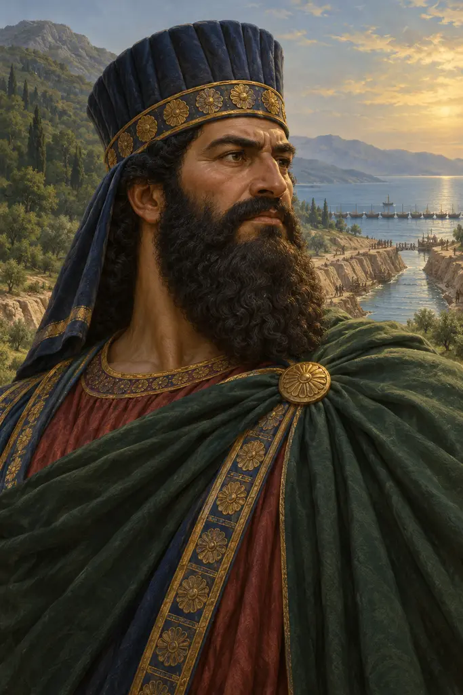
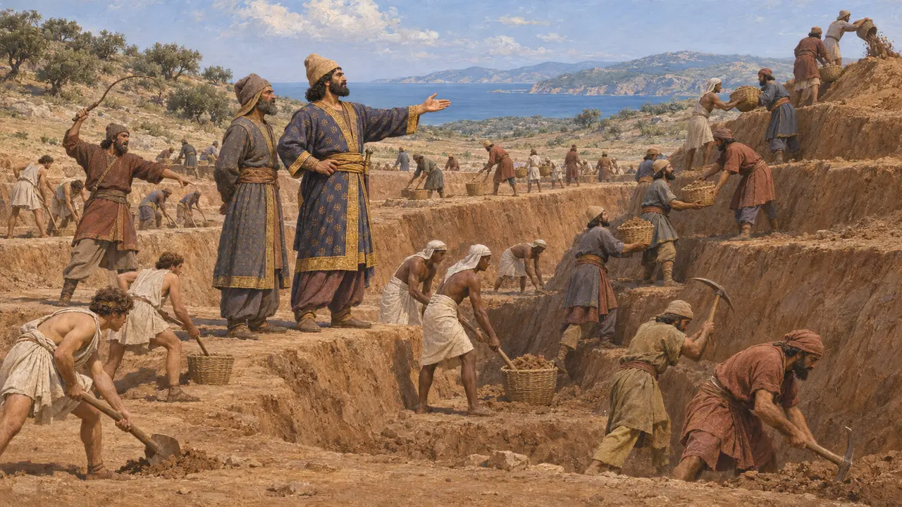
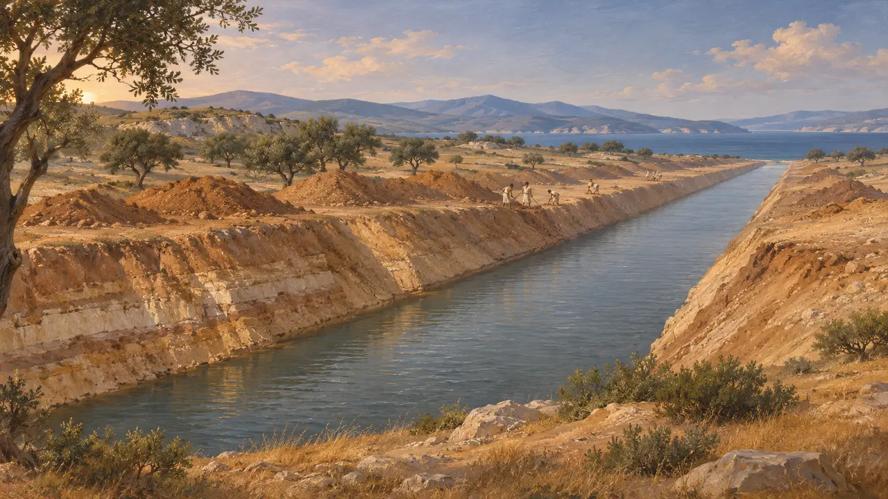
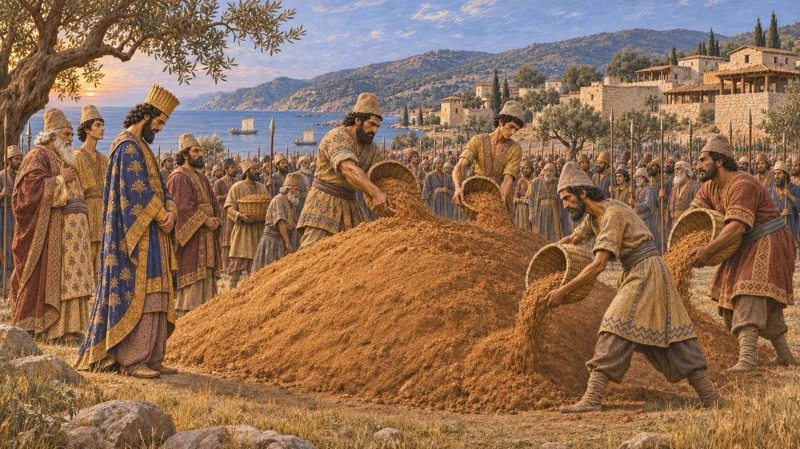
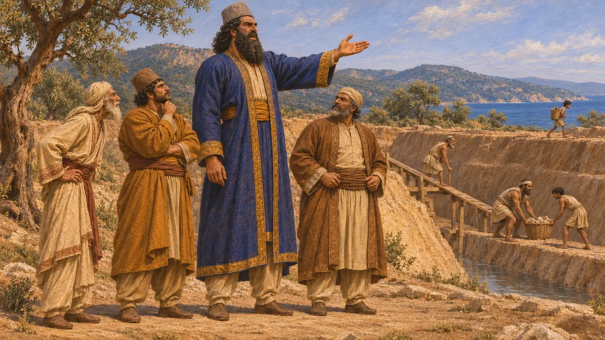
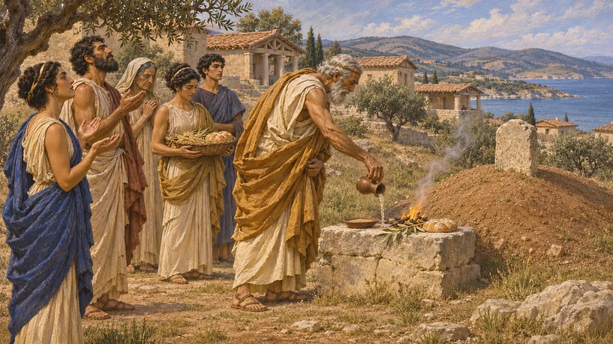

Artachaiès
Noble perse, surveillant du canal de l'Athos, mort à Acanthe en 480 av. J.-C.
Dans le jeu : Niveau 9 : Le Canal
Artachaiès, fils d'Artaios, était un noble perse qui partagea la direction du creusement du canal de Xerxès à travers l'isthme de l'Athos. Selon Hérodote, il mourut de maladie à Acanthe alors que l'armée de Xerxès marchait vers l'ouest en 480, et l'armée tout entière éleva un tertre funéraire sur sa tombe. Presque tout ce que l'on sait de lui vient d'Hérodote.
Dans le jeu : La chronique du jeu présente Artachaiès comme le surveillant du canal de l'Athos, inhumé à Acanthe sous un tertre élevé par l'armée. Hérodote ajoute qu'il mourut de maladie et qu'Acanthe l'honora plus tard comme un héros.

Surveillant du canal
Récit antiqueSelon Hérodote, deux Perses dirigèrent les travaux de l'Athos : Boubarès, fils de Mégabaze, et Artachaiès, fils d'Artaios. Il décrit le terrain réparti entre les contingents des différents peuples, les hommes creusant sous le fouet et se passant la terre de main en main jusqu'en haut. Dans son récit, les préparatifs de l'Athos durèrent environ trois ans, avant le passage de Xerxès en Europe en 480.
Herodotus 7.22-23

Le canal dans le sol
Dans les sourcesUne prospection britannique et grecque de l'isthme, menée entre 1991 et 2001, a retrouvé le tracé d'un chenal enfoui qui le traverse sur environ 2 kilomètres. Elle a confirmé qu'un canal avait bien été creusé à l'endroit indiqué par Hérodote. La prospection ne peut toutefois pas révéler qui dirigea les travaux : le rôle d'Artachaiès repose donc sur le seul témoignage d'Hérodote.
B. S. J. Isserlin et al., The Canal of Xerxes: Summary of Investigations 1991-2001, 2003

Mort à Acanthe
Récit antiqueHérodote rapporte que pendant le séjour de Xerxès à Acanthe, Artachaiès tomba malade et mourut. Il le présente comme un membre de la famille achéménide, tenu en haute estime par le Roi. Xerxès le pleura et lui fit de splendides funérailles, et l'armée tout entière éleva un tertre sur sa tombe.
Herodotus 7.117

Le plus grand des Perses
ContestéSelon Hérodote, Artachaiès était le plus grand des Perses, à quatre doigts près de cinq coudées royales, et avait la voix la plus forte de tous. Pris au pied de la lettre, ce chiffre lui donnerait bien plus de 2 mètres, et les historiens le tiennent pour exagéré ou pour une tradition locale. Aucun document perse connu à ce jour ne le mentionne, si bien que le récit grec ne peut être vérifié.
Herodotus 7.117

Un héros d'Acanthe
Récit antiqueHérodote ajoute que les habitants d'Acanthe, obéissant à un oracle, sacrifiaient à Artachaiès comme à un héros. Il précise qu'ils le faisaient encore de son temps, en l'invoquant par son nom. L'histoire parvint sans doute à Hérodote par la tradition grecque locale, et elle montre comment la tombe d'un Perse pouvait entrer dans le culte d'une cité grecque.
Herodotus 7.117
Sources
- Herodotus 7.117
- Herodotus 7.22
- Herodotus 7.23
- B. S. J. Isserlin et al., The Canal of Xerxes: Summary of Investigations 1991-2001, 2003
- P. Briant, From Cyrus to Alexander, 2002